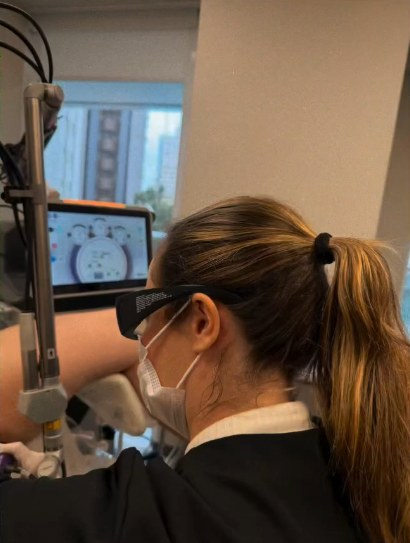
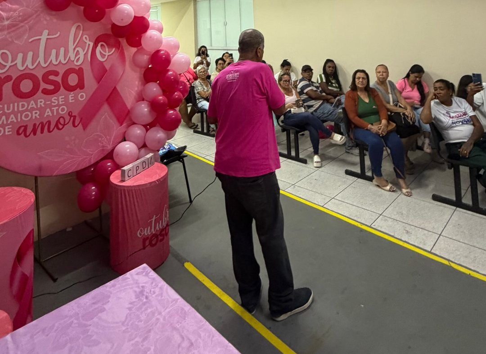
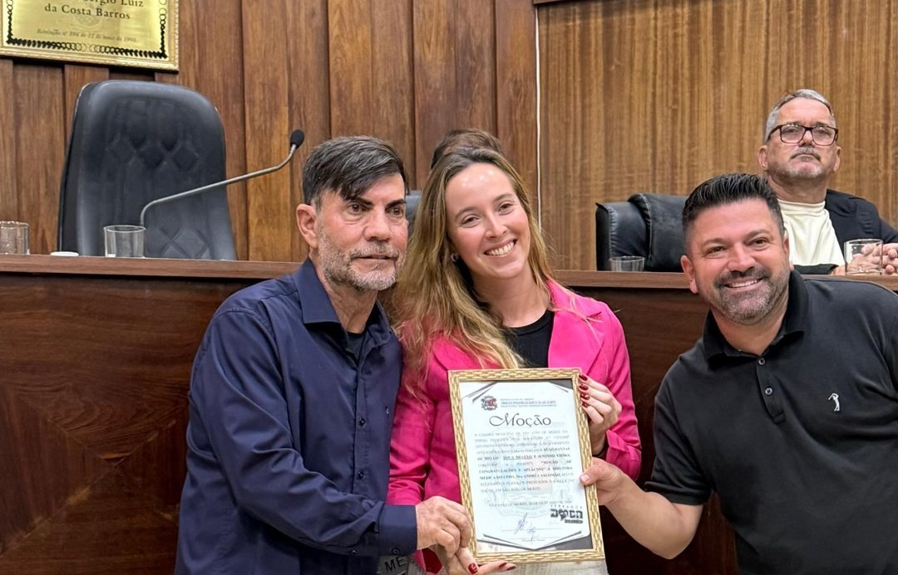
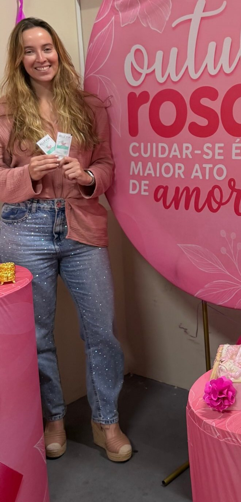
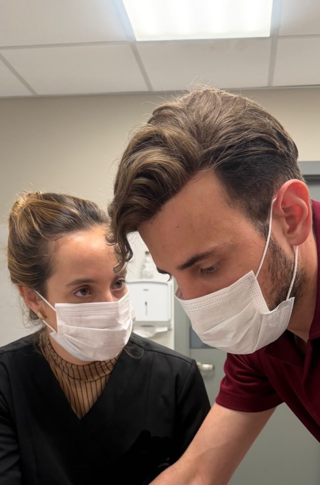

@deiasalomaoRio de Janeiro
Saúde feminina, sexualidade e bem-estar, com cuidado individual e personalizado.
Sou a Dra. Andrea Salomão, médica dedicada à saúde da mulher: saúde íntima, contracepção, sexualidade e bem-estar.
Acredito em cuidado individual e personalizado, com informação clara para que cada mulher faça escolhas seguras sobre o próprio corpo.

Atendimento individual e personalizado
Informação clara e escolhas segurasParticipação no 50º Congresso da SGORJ, em 2026Além das consultas, a Dra. Andrea leva informação sobre saúde da mulher para outros espaços e segue aprendendo.



A pele da vulva também merece atenção, entendendo o que o seu corpo realmente precisa, de forma individual e personalizada.
Orientação para escolher e acompanhar o método, incluindo o implante contraceptivo e os prazos de troca.
Um espaço para tirar dúvidas e falar do que incomoda, com informação e escolhas seguras.
Cuidado que olha para a rotina e para cada fase da vida da mulher.
Você conta o que precisa aqui no site e combina o horário pelo WhatsApp.
Conversa sobre o que você sente, sua rotina e seu histórico.
Orientações pensadas para o seu caso, explicadas com clareza.
Retornos para ajustar o que for preciso ao longo do tempo.
Acompanhe no Instagram: @deiasalomao
Não achou a sua? Fale direto com a Dra. Andrea pelo WhatsApp.
Preencha seu nome e o motivo da consulta no fim da página. Você vai para o WhatsApp com a mensagem pronta e a Dra. Andrea responde para combinar o horário.
Exames recentes, se tiver, e a lista dos medicamentos e métodos contraceptivos que você usa.
O atendimento é particular. Você recebe recibo para pedir reembolso ao seu plano de saúde, se ele oferecer.
Sim. A consulta pode ser presencial ou online; é só dizer sua preferência na mensagem.
Consultas com hora marcada no Rio de Janeiro. Se tiver qualquer dúvida antes de agendar, é só chamar no WhatsApp.
Agendar consultaEndereço, horários e formas de atendimento são exemplos desta prévia.